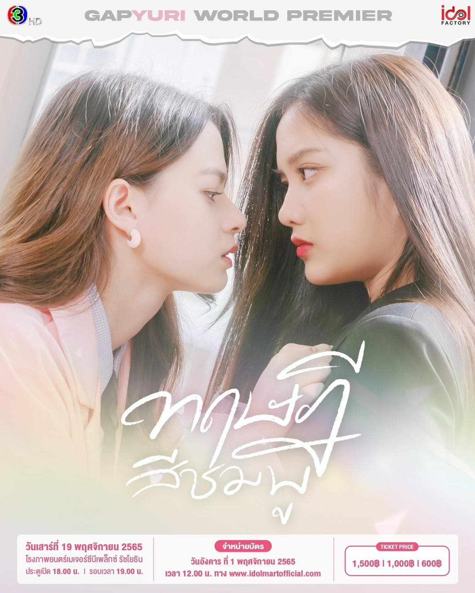
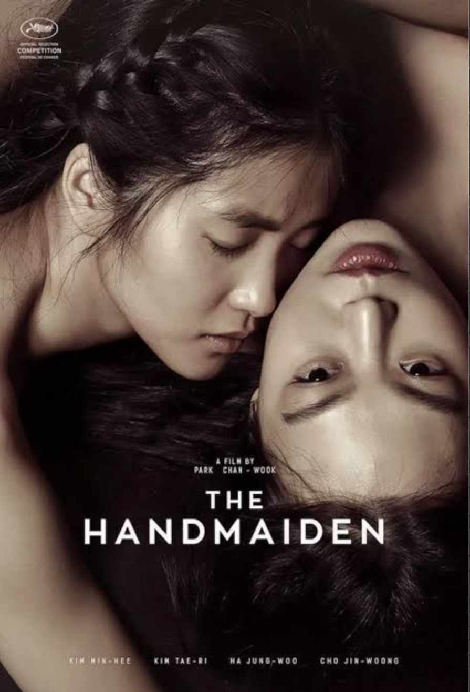
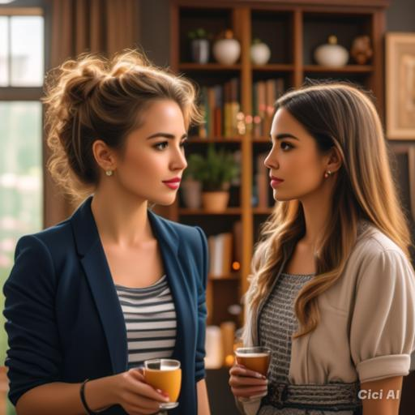
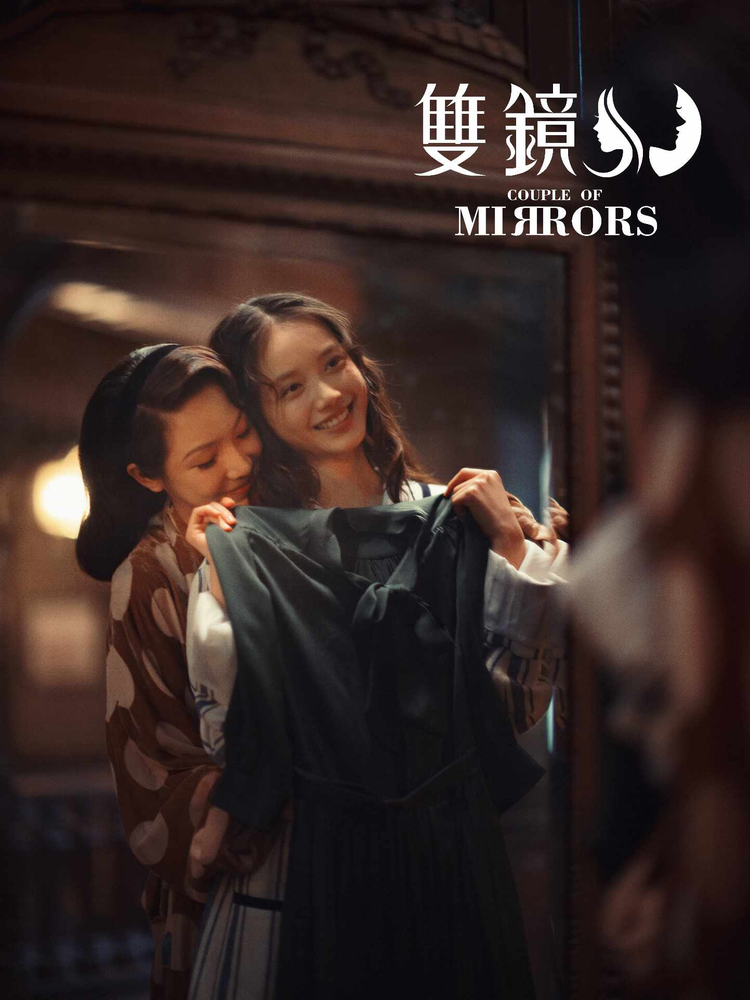

Watching GL (Girls' Love) is about enjoying stories that focus on romantic relationships between women. These shows or movies often explore themes of love, friendship, and personal growth, with the main characters developing deep emotional connections. The stories can be sweet, dramatic, or even funny, and they help show the different ways people experience love and relationships. Many people watch GL to see love stories that represent them or to enjoy new perspectives on romance.
"Gap: The Series" (2022, Thailand)

A romantic drama about the relationship between two women from vastly different social standings. Mon, who admires Sam for her beauty and success, starts working at Sam’s company. As Mon gets to know her cold and distant boss, she discovers unexpected warmth and a deep connection forming between them. Their budding romance navigates societal expectations and personal challenges.
"The Handmaiden" (2016, South Korea)

Set in 1930s Korea under Japanese occupation, this psychological thriller follows a young pickpocket who is hired as a maid for a wealthy Japanese woman in an elaborate con. As the plot twists, their relationship transforms into a passionate romance, defying the dangerous circumstances surrounding them.
"First Love" (2021, Philippines)

This series follows the complicated relationship between two women, Ely and Chloe, who are thrown back together after years apart. Ely, now in a long-term relationship with a man, must confront her unresolved feelings for Chloe. The drama explores the tension between duty and desire as they navigate old wounds and new possibilities.
"Couple of Mirrors" (2021, China)

A thrilling mystery romance where Yu Yan, a successful but unhappy writer, meets Yan Wei, a skilled assassin. As they form a strong connection, their worlds become intertwined with betrayal, secrets, and danger. The series mixes elements of crime with a slow-burn romance between the two women.